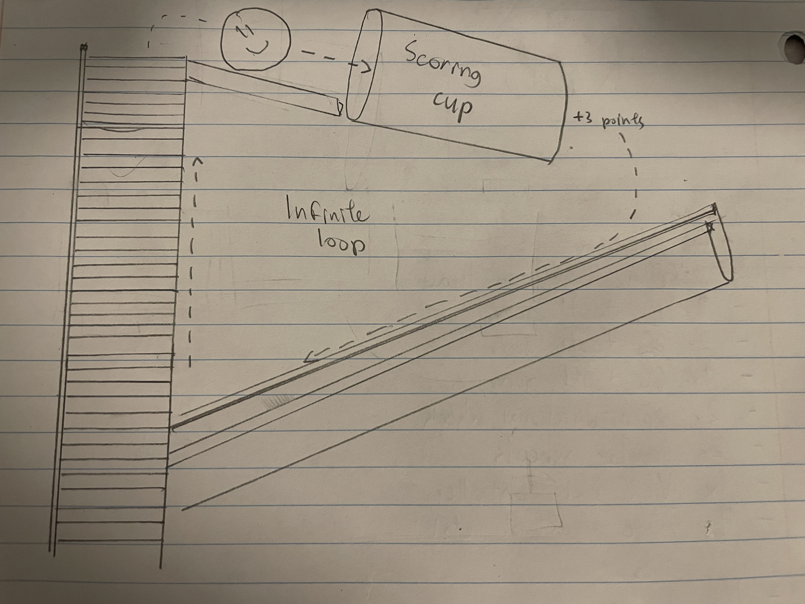
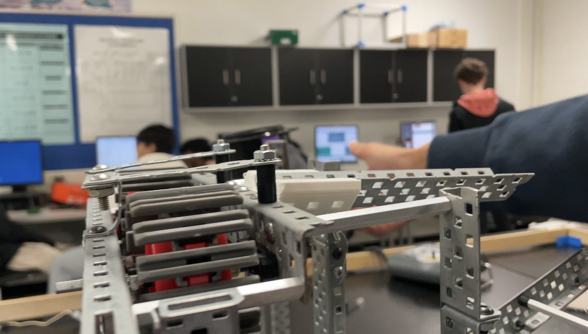
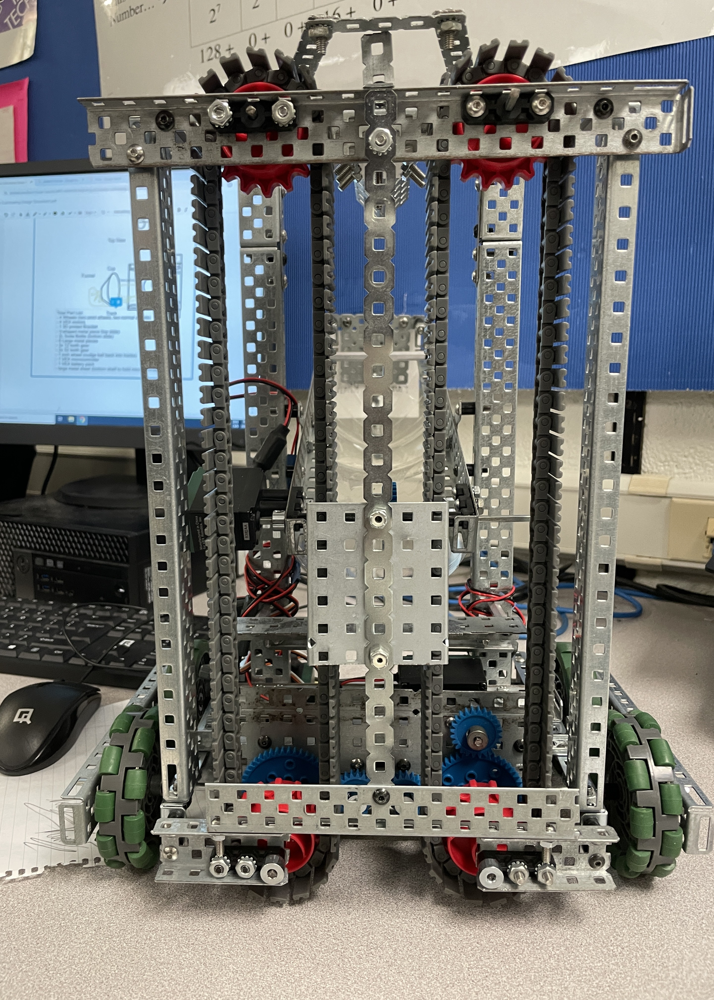
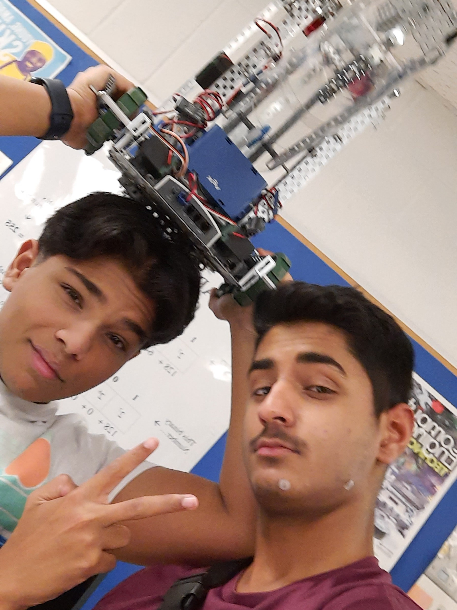

Closed-Loop Basketball Bot
Overview
Most robots score points. We decided to find a glitch.
The competition was simple: launch balls into a hoop for 3 points each, or bank them into a scoreboard for more (but you lose them forever.) The hoop was designed for the balls to be reused, but the organizer presumed they would have to be manually re-collected. If you could build a robot that never let go of its balls, you could just skip that step. You'd essentially make an infinite points glitch.
The catch? You only get 5 motors, a 12×12×12" envelope, and one 3D printed part. Building an infinitely recycling ball machine inside those constraints was the actual engineering problem.

The Hoop Problem
Getting the ball into the hoop consistently was harder than it sounds. The hoop sat at the maximum allowable robot height, which left no room for additional mechanisms. The ball had to arrive at exactly the right height and angle on its own. Shallow rails kept it on track, and a custom-angled 3D printed ramp, our one allowed printed part, did the rest. The angle had to be shallow enough to keep the ball above the rim, but steep enough to carry it over. It took a few iterations, but once it worked, it worked every time.

The Conveyor Problem
Getting the ball up was the harder problem. A vertical conveyor was the only mechanism that fit the envelope, but VEX gives you no tensioning components. A loose belt drops the ball. A tight belt stalls the motor. We had no tensioner, no custom pulleys, and no margin for error.
The solution was geometry. By under-dimensioning the loop by 5–10mm and designing the chassis as a rigid cube rather than a frame, we used structural rigidity as the tensioning mechanism. The interference fit held the belt taut, the chassis prevented flex, and the whole thing ran without a single dedicated tensioning part.
Getting the ball into the loop was easier; we just drove into it, ramming balls against a fixed wall and straight onto the belt. Getting it back was not. Balls would reach the bottom of the return and stall, falling out of the loop before re-engaging. We added a motor-driven wheel at the base of the return path to force balls back onto the belt, and a rear brace to stop them from being pushed out the back. After that, the loop ran flawlessly.

Results
We scored 33 points. Second place scored 15.
After initial positioning, scoring was reduced to holding two buttons. The closed loop ran continuously, recycling the same balls through the hoop indefinitely with zero additional driver input. One competing team attempted a similar design but couldn't achieve full closure. Their loop required manual reloading between cycles, while ours didn't.
The margin came down to one additional design decision: rather than dropping recycled balls to the bottom of the conveyor, our return path reintroduced them at the midpoint. That cut cycle time roughly in half compared to a full-height return, and over a timed match, that difference compounds into an over 2:1 lead.
